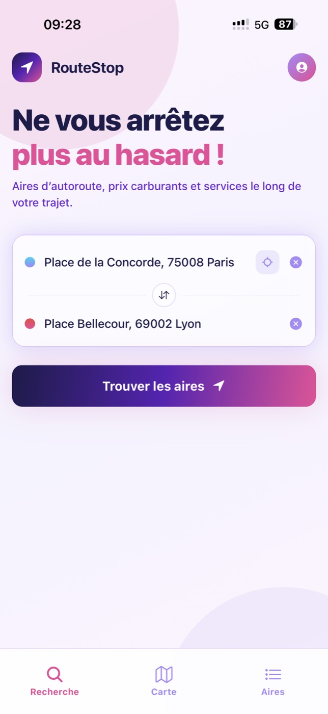
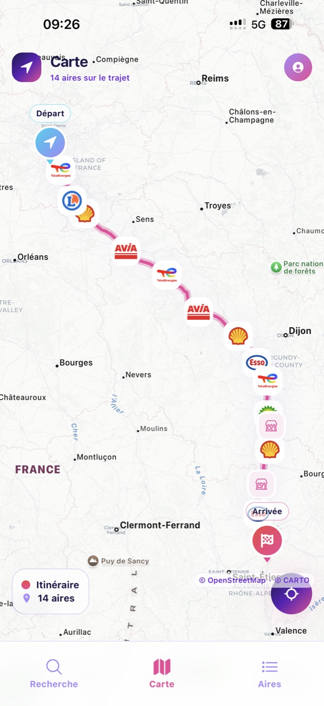
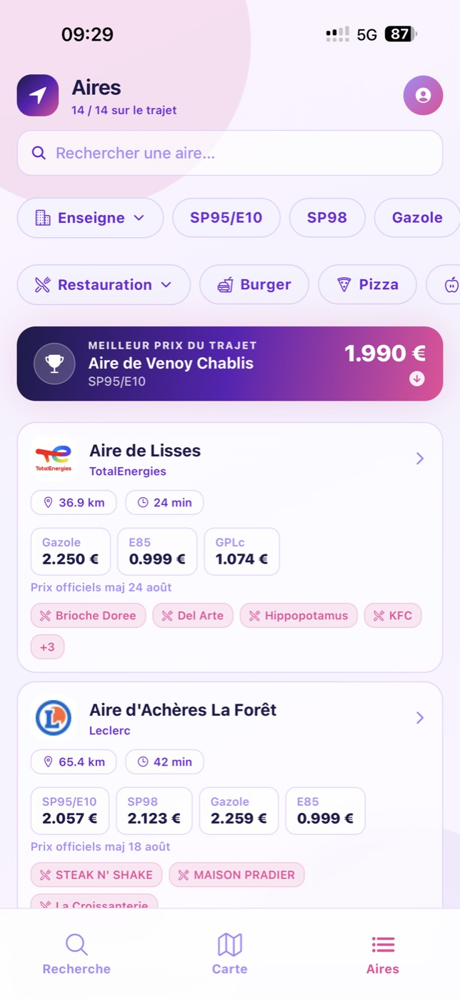
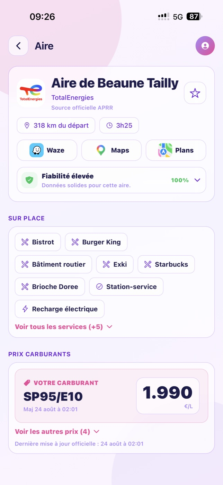

Les aires réellement sur votre route
Visualisez l’itinéraire, la distance depuis le départ et les prochains arrêts utiles.
Lancement iPhone imminent
Saisissez votre trajet. RouteStop affiche les aires sur votre route, compare les prix carburants, restaurants et services, puis vous guide vers l’arrêt choisi.


Tout ce qu’il faut avant la pause
Les informations utiles sont réunies au même endroit pour éviter de découvrir les services seulement après avoir quitté l’autoroute.
Visualisez l’itinéraire, la distance depuis le départ et les prochains arrêts utiles.
Comparez les carburants disponibles et vérifiez leur date de mise à jour.
Repérez restauration, boutiques, WC, douches, recharge et autres équipements.
Envoyez l’aire vers Waze, Google Maps ou Plans en un geste.
Simple du départ à l’arrêt
Un départ, une destination, puis RouteStop calcule les aires utiles.
Prix, enseignes, restauration, services et distance sont réunis.
Choisissez votre GPS habituel et reprenez la route sereinement.
L’application en mouvement
De la recherche à la fiche d’une aire, l’information reste centrée sur une seule décision : où faire la bonne pause.
De vraies captures de l’application
Ces écrans correspondent à l’application iPhone soumise à l’App Store.


Des données utiles
La dernière mise à jour disponible accompagne chaque tarif.
La provenance des informations est visible dans la fiche de l’aire.
Les utilisateurs connectés peuvent signaler une information à vérifier.
RouteStop arrive sur iPhone
Application gratuite. Suivez le lancement et les prochaines démonstrations.